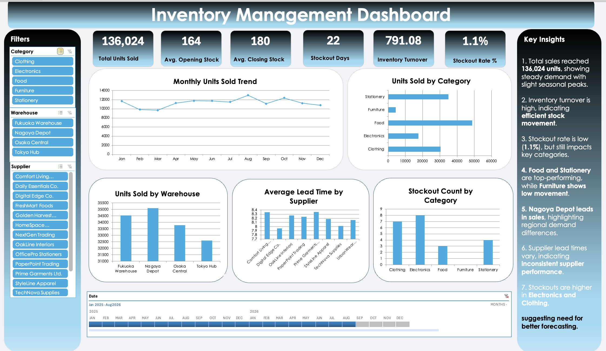
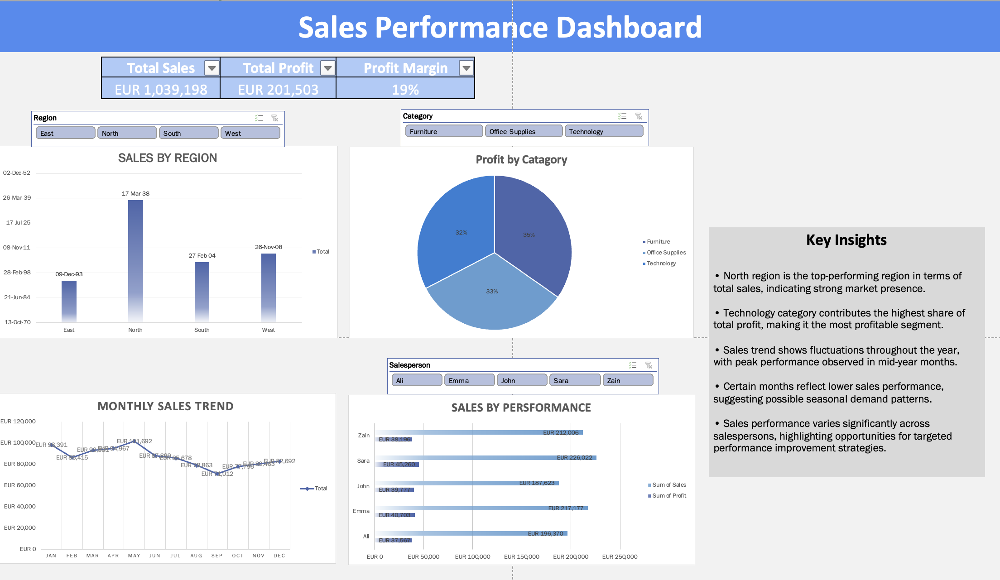
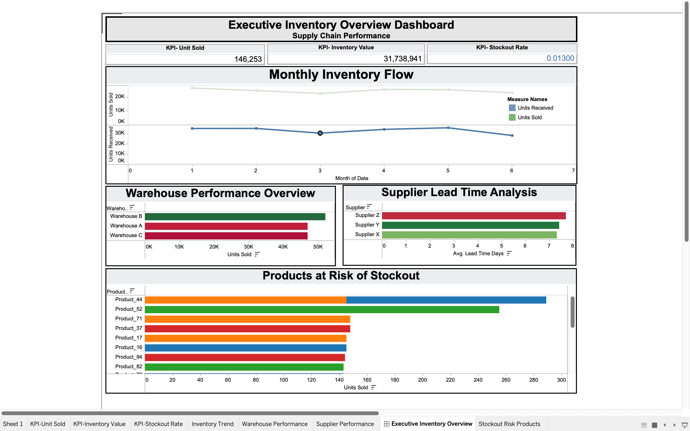

An interactive inventory dashboard built in Microsoft Excel.
View Project View on GitHub
An interactive sales dashboard built in Microsoft Excel.
View Project View on GitHub
An interactive Tableau dashboard analyzing inventory performance, warehouse efficiency and supplier lead times. It gives executive-level insight into stock flow, stockout risks and operational bottlenecks through KPI-driven visualization and dynamic filtering.
View Project View on GitHub
Random forest and LSTM models trained on clickstream data from the Open University Learning Analytics Dataset (OULAD) to estimate learners' engagement and cognitive load, with SHAP explanations showing which behaviors drive each prediction. Results, including corrections and non-replicating findings, are reported openly.
PythonPyTorchscikit-learnSHAPMachine learning